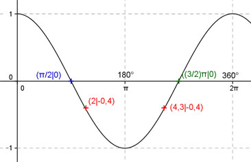

Aufgabe 131
Ergänzen Sie die Wertetabelle für x
zwischen 0 und 2π.
y = cos x
x π/2 2 oder 4,3
y 0 -0,4
Amplitude = 1 ; Periode = 2π
Berechnung der Nullstellen:
cos x = 0 ---> Wegen x = π/2 + k * π und k = 0, 1 -->
π/2 * 180°
x1 = π/2 oder ----------- = 90°
π
x2 = (3/2)π oder = 270°

Funktionswert an einer Stelle x ermitteln:
x = π/2 ≙ 90°
f(π/2) = cos π/2 = cos 90° = 0 entspricht der Nullstelle x1.
Berechnung der x-Werte für y = f(x) = -0,4:
f(x) = -0,4 eingesetzt, existiert einmal
zwischen 0 und π bzw. 0° und 180° und
zwischen π und 2π bzw. 180° und 360° (siehe Graph).
cos x = -0,4 -->
2 * 180°
x1 = arc cos -0,4 = 2 oder ---------- = 114,6° gerundet -->
π
Mit cos x = cos(2π - x), (siehe Einheitskreis) -->
x2 = 2π - 2 = 4,3 oder 360° - 114,6° = 245,4° gerundet
Einheitskreis, Radius = 1: